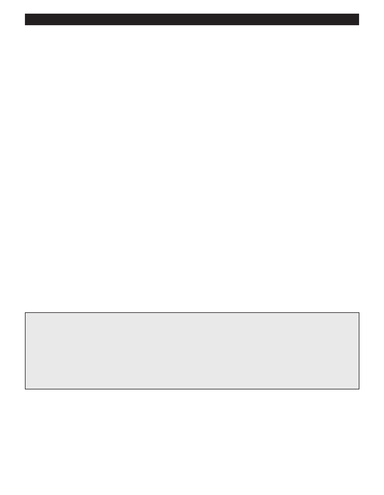

PA RT I C I PA N T R E S O U R C E G U I D E
Key Parts of a Gas Range
Most of the malfunctions that affect gas ranges involve the supply and ignition of gas in
the burners and the oven.
Range Control Panel
The control panel houses the oven thermostat, burner controls, clock, light, and other features.
Igniter
Most modern gas ranges use an electronic spark igniter (glow bar or glow plug) to start the pilot. The gas is ignited by an
electric ignition system. An element becomes hot and glows like the filament in a light bulb when an electric current passes
through it. The heat from the filament lights the gas. These ignition systems are sealed and cannot be repaired or adjusted.
When an electric ignition device fails, don’t try to fix it. Call a professional service person for replacement.
Cooktop Pilot Light
A correctly adjusted pilot flame is steady and blue, between 1/4 and 1/2 inch high. If the flame goes out repeatedly, or if it’s
yellow at the tip, it’s getting too little air. If there’s a space between the flame and the pilot feed tube, it’s getting too much air.
Oven Ignition Module
The oven ignition module produces the high voltage spark necessary to start the pilot.
Oven Gasket
The gasket is a form-fitting piece that provides a seal around the oven door.
Oven Thermostat
Set behind the temperature selector knob, this gauge can be calibrated by adjusting the back of the knob, if the oven actual
temperature is over or under the selected temperature.
Gas Range Safety Tips
If you smell gas, leave the apartment immediately. Do not try to turn off the gas from inside the apartment, or turn any
lights on or off. Go to a telephone or use your cell phone OUTSIDE THE APARTMENT to call the gas company or the fire
department immediately to report a leak. Do not re-enter the apartment.
Caution: Before doing any work on a gas range or oven, make sure it’s unplugged, or turn off the electric power to the
unit at the main service panel. If there is a grounding wire to the range, disconnect it. Also close the gas supply valve to
shut off the unit’s gas supply.
45